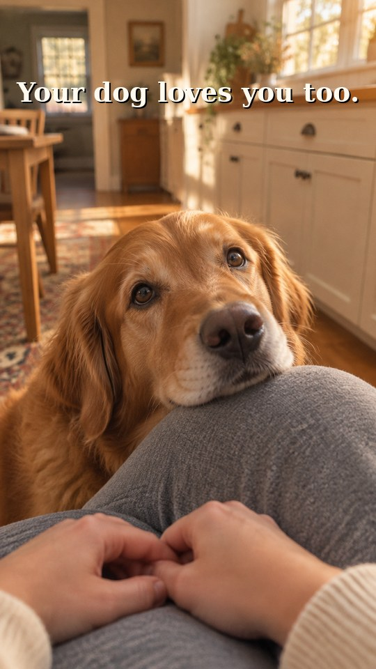
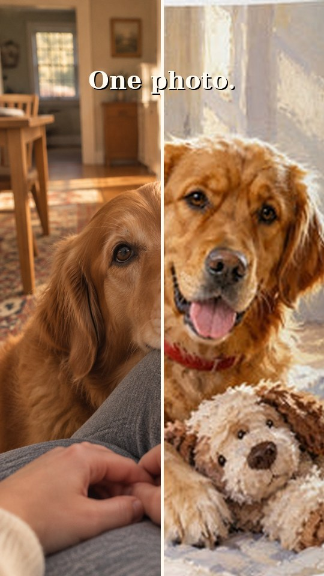
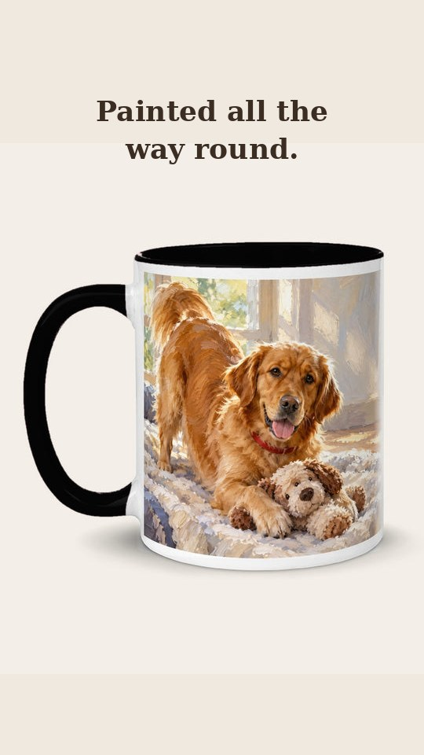
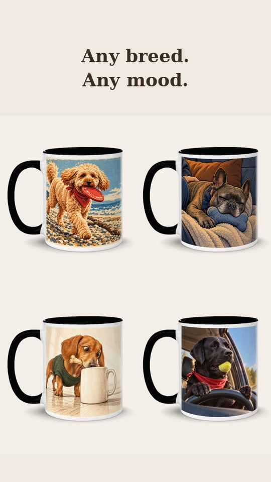
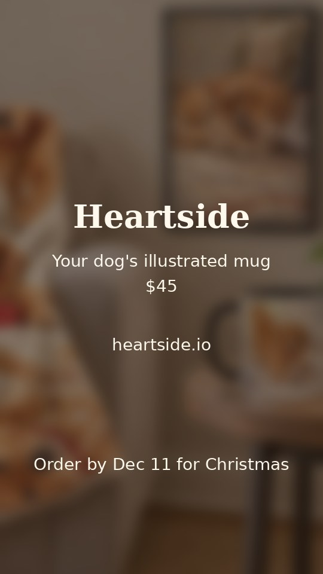

1 · 0 to 3s
"Your dog loves you too."
Runway moves this still: a slow push-in and a blink.
15 seconds, vertical, for Heartside's own channels. One photo of your dog becomes a painting all the way round a mug. These are rough frames, not the finished video.




